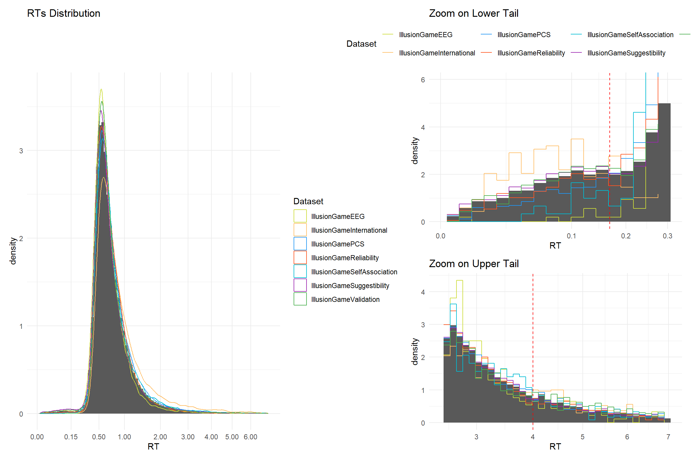
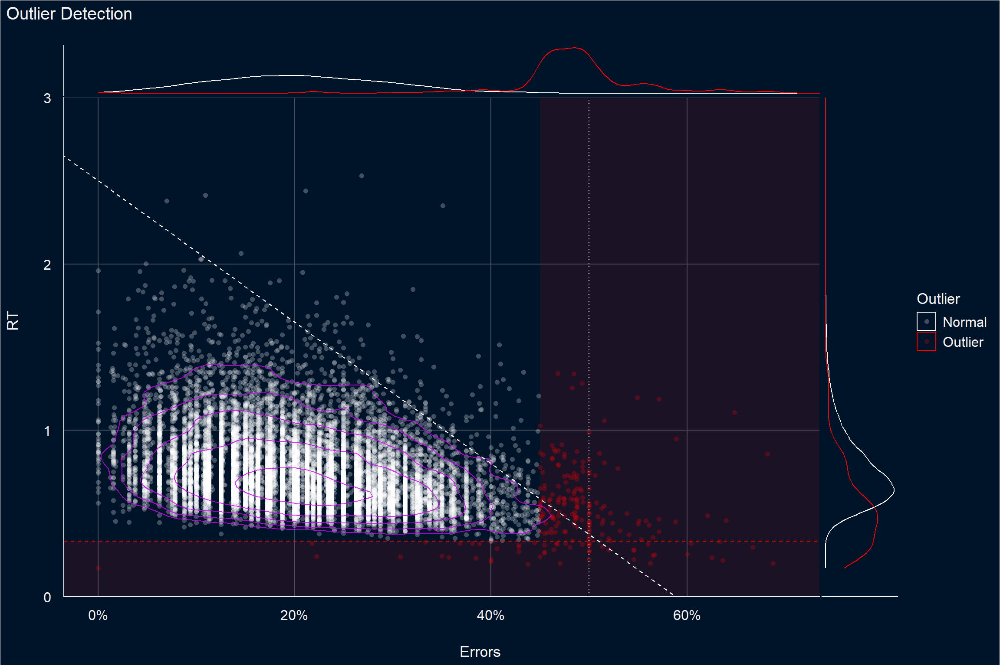
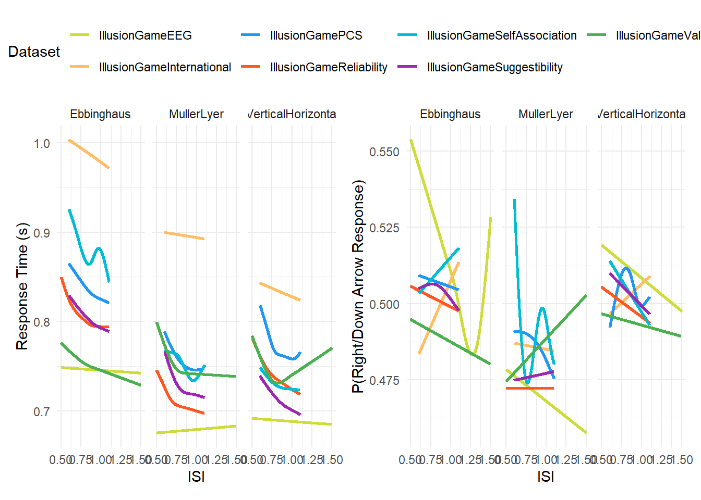
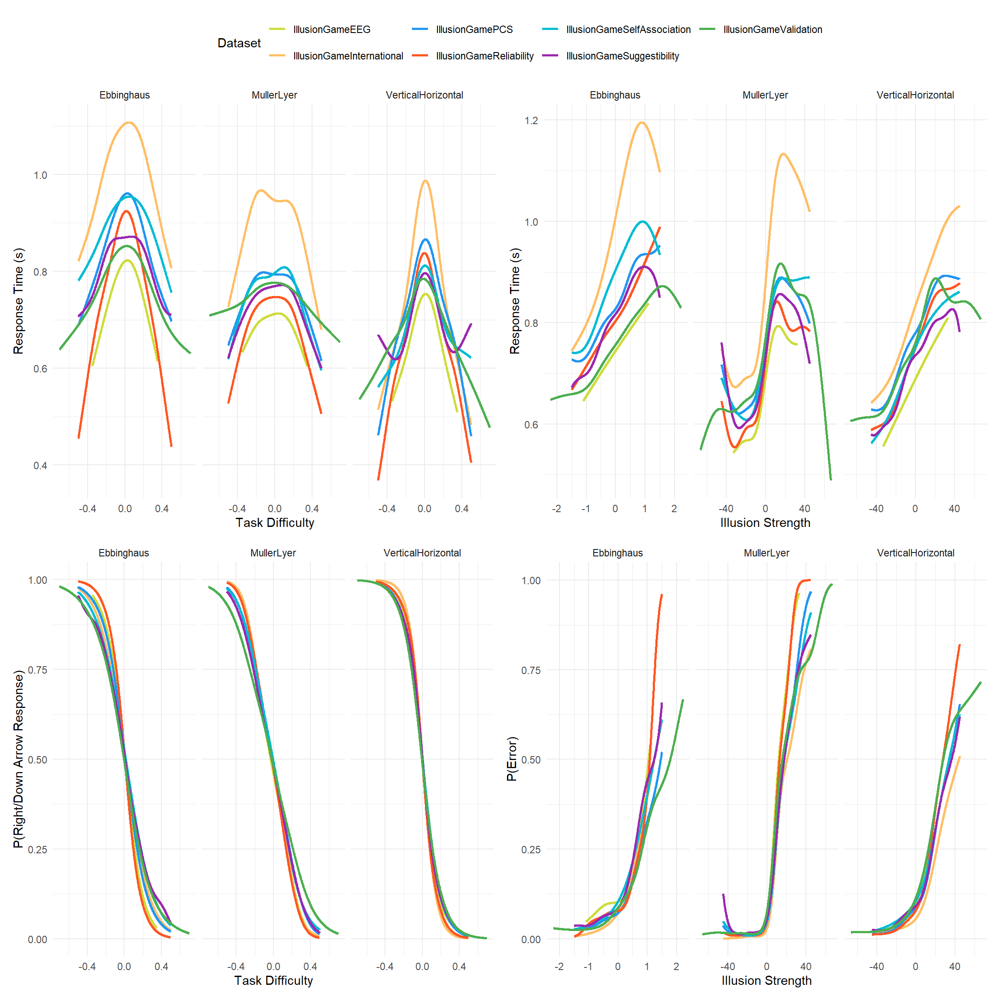

Code
library(tidyverse)
library(easystats)
library(patchwork)
library(ggside)
library(ggdist)library(tidyverse)
library(easystats)
library(patchwork)
library(ggside)
library(ggdist)illu_validation <- rbind(read.csv("https://raw.githubusercontent.com/RealityBending/IllusionGameValidation/refs/heads/main/data/study2_part1.csv"), read.csv("https://raw.githubusercontent.com/RealityBending/IllusionGameValidation/refs/heads/main/data/study2_part2.csv")) |>
mutate(
Dataset = "IllusionGameValidation",
Participant = paste0("IllusionGameValidation_", Participant),
Illusion_Difference = Illusion_Difference * Illusion_Side,
Block = case_match(Block, 1 ~ "A", 2 ~ "B", .default = as.character(Block)),
Illusion_Type = case_match(Illusion_Type,
"Müller-Lyer" ~ "MullerLyer",
"Vertical-Horizontal" ~ "VerticalHorizontal",
.default = Illusion_Type),
Answer = str_remove(Answer, "arrow"),
RT = RT / 1000,
ISI = ISI / 1000,
) |>
filter(Illusion_Type %in% c("MullerLyer", "Ebbinghaus", "VerticalHorizontal")) |>
select(Participant, Dataset, Illusion_Type, Block, Trial, Illusion_Difference, Illusion_Strength, ISI, Error, RT, Response=Answer)Warning: There was 1 warning in `mutate()`.
ℹ In argument: `Block = case_match(Block, 1 ~ "A", 2 ~ "B", .default =
as.character(Block))`.
Caused by warning:
! `case_match()` was deprecated in dplyr 1.2.0.
ℹ Please use `recode_values()` instead.ppt_validation <- read.csv("https://raw.githubusercontent.com/RealityBending/IllusionGameValidation/refs/heads/main/data/study3.csv") |>
mutate(
Dataset = "IllusionValidation",
Participant = paste0("IllusionGameValidation_", Participant)
)illu_eeg <- read.csv("https://raw.githubusercontent.com/RealityBending/IllusionGameEEG/refs/heads/main/data/rawdata_beh_illusion.csv") |>
mutate(
Dataset = "IllusionGameEEG",
Participant = paste0("IllusionGameEEG_", Subject_ID),
Illusion_Difference = Illusion_Difference * Illusion_Side,
Illusion_Type = case_match(Illusion_Type,
"Müller-Lyer" ~ "MullerLyer",
"Vertical-Horizontal" ~ "VerticalHorizontal",
.default = Illusion_Type),
Answer = str_remove(Answer, "arrow"),
RT = RT / 1000,
ISI = ISI /1000,
Block = case_when(
Block %in% 1:3 ~ "A",
Block %in% 4:6 ~ "B"
)
) |>
filter(Illusion_Type %in% c("MullerLyer", "Ebbinghaus", "VerticalHorizontal")) |>
select(Participant, Dataset, Illusion_Type, Block, Trial=Event_Number, Illusion_Difference, Illusion_Strength, ISI, Error, RT, Response=Answer)
ppt_eeg <- read.csv("https://raw.githubusercontent.com/RealityBending/IllusionGameEEG/refs/heads/main/data/rawdata_beh_participants.csv") |>
mutate(
Dataset = "IllusionGameEEG",
Participant = paste0("IllusionGameEEG_", Participant)
)illu_reliability <- read.csv("https://raw.githubusercontent.com/RealityBending/IllusionGameReliability/refs/heads/main/data/raw_illusion1.csv") |>
mutate(
Dataset = "IllusionGameReliability",
Participant = paste0("IllusionGameReliability_", Participant),
Illusion_Difference = Illusion_Difference * Illusion_Side,
ISI = ISI / 1000,
Block = case_match(Block, 1 ~ "A", 2 ~ "B", .default = as.character(Block))
) |>
select(Participant, Dataset, Illusion_Type, Block, Trial, Illusion_Difference, Illusion_Strength, ISI, Error, RT, Response=Answer)
ppt_reliability <- read.csv("https://raw.githubusercontent.com/RealityBending/IllusionGameReliability/refs/heads/main/data/raw_questionnaires.csv") |>
mutate(
Dataset = "IllusionGameReliability",
Participant = paste0("IllusionGameReliability_", Participant)
)illu_international <- read.csv("https://raw.githubusercontent.com/RealityBending/IllusionGameInternational/refs/heads/main/data/rawdata_IllusionGame.csv") |>
mutate(
Dataset = "IllusionGameInternational",
Participant = paste0("IllusionGameInternational_", Participant),
Response = str_remove(Response, "arrow")
) |>
select(Participant, Dataset, Illusion_Type, Block, Trial, Illusion_Difference, Illusion_Strength, ISI, Error, RT, Response)
ppt_international <- read.csv("https://raw.githubusercontent.com/RealityBending/IllusionGameInternational/refs/heads/main/data/rawdata_participants.csv") |>
mutate(
Dataset = "IllusionGameInternational",
Participant = paste0("IllusionGameInternational_", Participant)
)illu_suggestibility <- read.csv("https://raw.githubusercontent.com/RealityBending/IllusionGameSuggestibility/refs/heads/main/data/rawdata_IllusionGame.csv") |>
mutate(
Dataset = "IllusionGameSuggestibility",
Participant = paste0("IllusionGameSuggestibility_", Participant),
Response = str_remove(Response, "arrow")
) |>
select(Participant, Dataset, Illusion_Type, Block, Trial, Illusion_Difference, Illusion_Strength, ISI, Error, RT, Response)
ppt_suggestibility <- read.csv("https://raw.githubusercontent.com/RealityBending/IllusionGameSuggestibility/refs/heads/main/data/rawdata_participants.csv") |>
mutate(
Dataset = "IllusionGameSuggestibility",
Participant = paste0("IllusionGameSuggestibility_", Participant)
)illu_pcs <- read.csv("https://raw.githubusercontent.com/RealityBending/IllusionGamePhenomenologicalControl/refs/heads/main/data/rawdata_illusion.csv") |>
mutate(
Dataset = "IllusionGamePCS",
Participant = paste0("IllusionGamePCS_", Participant),
Response = tolower(str_remove(Response, "Arrow"))
) |>
select(Participant, Dataset, Illusion_Type, Block, Trial, Illusion_Difference, Illusion_Strength, ISI, Error, RT, Response)
ppt_pcs <- read.csv("https://raw.githubusercontent.com/RealityBending/IllusionGamePhenomenologicalControl/refs/heads/main/data/rawdata_participants.csv") |>
mutate(
Dataset = "IllusionGamePCS",
Participant = paste0("IllusionGamePCS_", Participant)
)illu_self <- read.csv("https://raw.githubusercontent.com/RealityBending/IllusionGameSelfAssociation/refs/heads/main/data/rawdata_control_IllusionGame.csv") |>
mutate(
Dataset = "IllusionGameSelfAssociation",
Participant = paste0("IllusionGameSelfAssociation_", Participant),
Response = str_remove(Response, "arrow")
) |>
select(Participant, Dataset, Illusion_Type, Block, Trial, Illusion_Difference, Illusion_Strength, ISI, Error, RT, Response)
ppt_self <- read.csv("https://raw.githubusercontent.com/RealityBending/IllusionGameSelfAssociation/refs/heads/main/data/rawdata_control_participants.csv") |>
mutate(
Dataset = "IllusionGameSelfAssociation",
Participant = paste0("IllusionGameSelfAssociation_", Participant)
)illu <- rbind(illu_validation, illu_eeg, illu_reliability, illu_international, illu_suggestibility, illu_pcs, illu_self) |>
mutate(ISI = ISI)
illu |>
summarize(ISI = mean(ISI), .by = c("Dataset", "Illusion_Type")) Dataset Illusion_Type ISI
1 IllusionGameValidation Ebbinghaus 0.7502894
2 IllusionGameValidation MullerLyer 0.7498441
3 IllusionGameValidation VerticalHorizontal 0.7499538
4 IllusionGameEEG Ebbinghaus 1.2530856
5 IllusionGameEEG VerticalHorizontal 1.2481600
6 IllusionGameEEG MullerLyer 1.2519161
7 IllusionGameReliability MullerLyer 0.7503701
8 IllusionGameReliability Ebbinghaus 0.7489938
9 IllusionGameReliability VerticalHorizontal 0.7510585
10 IllusionGameInternational MullerLyer 0.8520743
11 IllusionGameInternational Ebbinghaus 0.8507223
12 IllusionGameInternational VerticalHorizontal 0.8511720
13 IllusionGameSuggestibility MullerLyer 0.8500968
14 IllusionGameSuggestibility Ebbinghaus 0.8497846
15 IllusionGameSuggestibility VerticalHorizontal 0.8500587
16 IllusionGamePCS MullerLyer 0.8504818
17 IllusionGamePCS Ebbinghaus 0.8497703
18 IllusionGamePCS VerticalHorizontal 0.8505298
19 IllusionGameSelfAssociation MullerLyer 0.8517395
20 IllusionGameSelfAssociation Ebbinghaus 0.8497702
21 IllusionGameSelfAssociation VerticalHorizontal 0.8501013# TODO: Sanitize ISI (directly in the original preprocesing scripts)
illu |>
summarize(N = n_distinct(Participant),
N_obs = n(),
.by= "Dataset") |>
gt::gt(rowname_col = "Dataset") |>
gt::grand_summary_rows(fns = list(label = "Total", fn = "sum"),
columns = -Dataset) | N | N_obs | |
|---|---|---|
| IllusionGameValidation | 256 | 98088 |
| IllusionGameEEG | 100 | 38400 |
| IllusionGameReliability | 500 | 192000 |
| IllusionGameInternational | 44 | 21120 |
| IllusionGameSuggestibility | 780 | 374400 |
| IllusionGamePCS | 500 | 240000 |
| IllusionGameSelfAssociation | 43 | 20640 |
| Total | 2223 | 984648 |
We removed 1444 trials (0.15% of the data) with RTs longer than 6 seconds, as these likely reflect participants taking breaks during the task.
illu <- illu |> filter(RT < 7)We removed 94 trials (9.56e-03%) where RT equaled 0, as these likely reflect early responses that coincided with stimulus onset.
illu <- illu |> filter(RT > 0)cols <- c("IllusionGameValidation" = "#4CAF50", "IllusionGameEEG" = "#CDDC39", "IllusionGameReliability" = "#FF5722", "IllusionGameInternational" = "#FFBE65", "IllusionGameSuggestibility" = "#9C27B0", "IllusionGamePCS" = "#2196F3", "IllusionGameSelfAssociation" = "#00BCD4")
binwidth <- 0.03
# Get density of lognormal distribution
xrange <- seq(0, 6, by = 0.01)
dlognorm <- dlnorm(xrange, meanlog = mean(log(illu$RT)), sdlog = 0.4)
p1 <- illu |>
ggplot(aes(x = RT)) +
geom_histogram(aes(y=after_stat(density)), binwidth = binwidth) +
# stat_bin(aes(y=after_stat(density), color = Dataset), geom="step",
# binwidth = binwidth,
# position = position_nudge(x = -0.5 * binwidth)) +
geom_density(aes(color = Dataset)) +
# geom_line(data = data.frame(x = xrange, y = dlognorm), aes(x = x, y = y), color = "black", linetype = "dashed") +
scale_x_sqrt(breaks = c(0, 0.15, 0.5, 1, 2, 3, 4, 5, 6),
minor_breaks = NULL) +
scale_color_manual(values = cols) +
labs(title = "RTs Distribution") +
theme(legend.position = "none") +
theme_minimal()
p_tail1 <- illu |>
filter(RT < 0.3) |>
ggplot(aes(x = RT)) +
geom_histogram(aes(y=after_stat(density)), binwidth = binwidth) +
stat_bin(aes(y=after_stat(density), color = Dataset), geom="step",
binwidth = binwidth,
position = position_nudge(x = -0.5 * binwidth)) +
geom_vline(xintercept = 1/6, linetype = "dashed", color = "red") +
scale_x_sqrt() +
scale_color_manual(values = cols) +
coord_cartesian(ylim = c(0, 6)) +
labs(title = "Zoom on Lower Tail") +
theme_minimal()
p_tail2 <- illu |>
filter(RT > 2.5) |>
ggplot(aes(x = RT)) +
geom_histogram(aes(y=after_stat(density)), binwidth = binwidth) +
stat_bin(aes(y=after_stat(density), color = Dataset), geom="step",
binwidth = binwidth,
position = position_nudge(x = -0.5 * binwidth)) +
geom_vline(xintercept = 4, linetype = "dashed", color = "red") +
scale_x_sqrt() +
scale_color_manual(values = cols) +
labs(title = "Zoom on Upper Tail") +
theme_minimal()
p1 | (p_tail1 / p_tail2 ) + plot_layout(guides = "collect") & theme(legend.position = "top")
We removed 7017 trials (0.71%) with RTs shorter than 1/6 seconds, as these likely reflect anticipatory responses, and 3787 trials (0.39%) with RTs longer than 4 seconds.
illu <- illu |> filter(RT > 1/6) |> filter(RT < 4)outliers <- illu |>
summarize(Error = mean(Error),
RT_SD = sd(RT),
# RT_Skew = datawizard::skewness(RT),
# RT_Kurtosis = datawizard::kurtosis(RT),
RT = mean(RT),
.by = c("Participant", "Illusion_Type", "Block", "Dataset")) |>
mutate(RT_SD = ifelse(is.na(RT_SD), 1, RT_SD)) |>
arrange(desc(Error), desc(RT))
# Rules
outliers$Outlier <- ifelse(outliers$RT < 1/3, "Outlier", "Normal")
outliers$Outlier <- ifelse(outliers$RT > 3, "Outlier", outliers$Outlier)
outliers$Outlier <- ifelse(outliers$Error >= 0.45, "Outlier", outliers$Outlier)
outliers |>
ggplot(aes(x = Error, y = RT)) +
see::geom_point_borderless(aes(color = Outlier), alpha = 1/4, size = 2) +
geom_density_2d(color = "#D500F9", alpha = 0.8, show.legend = FALSE, linewidth = 0.5,
breaks = c(0.5, 1, 2, 4, 8)) +
annotate("rect", xmin = -Inf, xmax = 0.45, ymin = -Inf, ymax = 1/3, alpha = 0.1, fill = "red") +
annotate("rect", xmin = -Inf, xmax = 0.45, ymin = 3, ymax = Inf, alpha = 0.1, fill = "red") +
annotate("rect", xmin = 0.45, xmax = Inf, ymin = -Inf, ymax = Inf, alpha = 0.1, fill = "red") +
geom_hline(yintercept = c(1/3), linetype = "dashed", color = "red") +
geom_vline(xintercept = 0.5, linetype = "dotted", color = "white") +
geom_abline(intercept = 2.5, slope = -4.25, linetype = "dashed", color = "white") +
scale_color_manual(values = c("Outlier" = "red", "Normal" = "white")) +
scale_x_continuous(limits = c(0, 1), breaks = seq(0, 1, by = 0.2), labels = scales::percent) +
scale_y_continuous(expand = c(0, 0)) +
coord_cartesian(xlim = c(0, 0.7), ylim = c(0, 3)) +
labs(title = "Outlier Detection", x = "Errors") +
# ggside::geom_xsidedensity(aes(y = after_stat(density)), alpha = 0.5) +
ggside::geom_xsidedensity(aes(y = after_stat(density), color = Outlier), alpha = 0.5) +
ggside::geom_ysidedensity(aes(x = after_stat(density), color = Outlier), alpha = 0.5) +
theme_abyss() +
ggside::theme_ggside_void()
outliers <- outliers |>
mutate(Section = paste(Participant, Illusion_Type, Block, Dataset)) |>
filter(Outlier == "Outlier") |>
pull(Section)
flagged <- paste(illu$Participant, illu$Illusion_Type, illu$Block, illu$Dataset) %in% outliersWe removed 11080 trials (1.14%) from 117 participants flagged as outliers based on their overall error rate and RT distribution.
illu <- illu[!flagged,]# TODO: remove the filtering once ISI is consistent
m_isi1 <- mgcv::bam(RT ~ Group + s(ISI, k = -1, by = `Group`, bs = "cr"),
data = mutate(illu, Group = as.factor(paste0(Dataset, "_", Illusion_Type))))
p_isi1 <- estimate_relation(m_isi1, length = 1000) |>
mutate(Dataset = str_remove(Group, "_.*"),
Illusion_Type = str_remove(Group, ".*_")) |>
ggplot(aes(x = ISI, y = Predicted, color = Dataset)) +
geom_line(linewidth = 1) +
scale_color_manual(values = cols) +
facet_wrap(~Illusion_Type, scales = "free_x") +
labs(y = "Response Time (s)", x = "ISI") +
theme_minimal()
m_isi2 <- mgcv::bam(RightDown ~ Group + s(ISI, k = -1, by = `Group`, bs = "cr"),
family = binomial(link = "logit"),
data = mutate(illu,
RightDown = ifelse(Response %in% c("down", "right"), 1, 0),
Group = as.factor(paste0(Dataset, "_", Illusion_Type))))
p_isi2 <- estimate_relation(m_isi2, length = 1000) |>
mutate(Dataset = str_remove(Group, "_.*"),
Illusion_Type = str_remove(Group, ".*_")) |>
ggplot(aes(x = ISI, y = Predicted, color = Dataset)) +
geom_line(linewidth = 1) +
scale_color_manual(values = cols) +
facet_wrap(~Illusion_Type, scales = "free_x") +
labs(y = "P(Right/Down Arrow Response)", x = "ISI") +
theme_minimal()
(p_isi1 | p_isi2) +
plot_layout(guides = "collect") & theme(legend.position = "top")
# RTs
# ---------------
m_diff1 <- mgcv::bam(RT ~ Group + s(Illusion_Difference, k = -1, by = `Group`, bs = "ts"),
data = mutate(illu, Group = as.factor(paste0(Dataset, "_", Illusion_Type))))
p_diff1 <- estimate_relation(m_diff1, length = 1000) |>
mutate(Dataset = str_remove(Group, "_.*"),
Illusion_Type = str_remove(Group, ".*_")) |>
ggplot(aes(x = Illusion_Difference, y = Predicted, color = Dataset)) +
geom_line(linewidth = 1) +
scale_color_manual(values = cols) +
facet_wrap(~Illusion_Type, scales = "free_x") +
labs(y = "Response Time (s)", x = "Task Difficulty") +
theme_minimal()
m_strength1 <- mgcv::bam(RT ~ Group + s(Illusion_Strength, k = -1, by = `Group`, bs = "ts"),
data = mutate(illu,
Illusion_Strength = Illusion_Strength * ifelse(Illusion_Type == "Ebbinghaus", 30, 1),
Group = as.factor(paste0(Dataset, "_", Illusion_Type))))
p_strength1 <- estimate_relation(m_strength1, length = 1000) |>
mutate(Dataset = str_remove(Group, "_.*"),
Illusion_Type = str_remove(Group, ".*_"),
Illusion_Strength = Illusion_Strength / ifelse(Illusion_Type == "Ebbinghaus", 30, 1)) |>
ggplot(aes(x = Illusion_Strength, y = Predicted, color = Dataset)) +
geom_line(linewidth = 1) +
scale_color_manual(values = cols) +
facet_wrap(~Illusion_Type, scales = "free_x") +
labs(y = "Response Time (s)", x = "Illusion Strength") +
theme_minimal()# Responses
# ---------------
m_diff2 <- mgcv::bam(RightDown ~ Group + s(Illusion_Difference, k = -1, by = `Group`, bs = "ts"),
family = binomial(link = "logit"),
data = mutate(illu,
RightDown = ifelse(Response %in% c("down", "right"), 1, 0),
Group = as.factor(paste0(Dataset, "_", Illusion_Type))))
p_diff2 <- estimate_relation(m_diff2, length = 1000) |>
mutate(Dataset = str_remove(Group, "_.*"),
Illusion_Type = str_remove(Group, ".*_")) |>
ggplot(aes(x = Illusion_Difference, y = Predicted, color = Dataset)) +
geom_line(linewidth = 1) +
scale_color_manual(values = cols) +
facet_wrap(~Illusion_Type, scales = "free_x") +
labs(y = "P(Right/Down Arrow Response)", x = "Task Difficulty") +
theme_minimal()
m_strength2 <- mgcv::bam(Error ~ Group + s(Illusion_Strength, k = -1, by = `Group`, bs = "ts"),
family = binomial(link = "logit"),
data = mutate(illu,
Illusion_Strength = Illusion_Strength * ifelse(Illusion_Type == "Ebbinghaus", 30, 1),
Group = as.factor(paste0(Dataset, "_", Illusion_Type))))
p_strength2 <- estimate_relation(m_strength2, length = 1000) |>
mutate(Dataset = str_remove(Group, "_.*"),
Illusion_Type = str_remove(Group, ".*_"),
Illusion_Strength = Illusion_Strength / ifelse(Illusion_Type == "Ebbinghaus", 30, 1)) |>
ggplot(aes(x = Illusion_Strength, y = Predicted, color = Dataset)) +
geom_line(linewidth = 1) +
scale_color_manual(values = cols) +
facet_wrap(~Illusion_Type, scales = "free_x") +
labs(y = "P(Error)", x = "Illusion Strength") +
theme_minimal()
(p_diff1 | p_strength1) / (p_diff2 | p_strength2) +
plot_layout(guides = "collect") & theme(legend.position = "top")
# Split file to avoid GitHub upload limits
write.csv(illu[1:400000, ], "../data/illusion_part1.csv", row.names = FALSE)
write.csv(illu[400001:800000, ], "../data/illusion_part2.csv", row.names = FALSE)
write.csv(illu[800001:nrow(illu), ], "../data/illusion_part3.csv", row.names = FALSE)